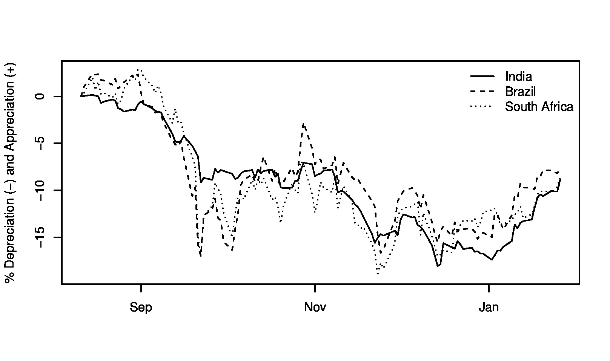

Right facts, wrong conclusion
Financial Express, 23 February 2012
The turnaround of the rupee dollar rate in recently weeks is seen as a consequence of successful intevention by the RBI in the foreign exchange market. The rupee stopped depreciating, and actually appreciated, after a set of small nudging steps by the RBI. This perception has led to increased support for an interventionist policy. But evidence suggests that the behaviour of the currencies of large emerging markets was similar to that of the rupee. The RBI was leaning with the wind, rather than against it.
RBI's foreign exchange intervention data shows that the RBI sold more than USD 9 billion worth of foreign exchange reserves in December 2011. RBI intervened both in the spot and forward markets and moved away from its policy of a freely moving exchange rate as seen in the last two years. Further, steps were taken to curb derivatives trading. In the following weeks the rupee appreciated against the US dollar. The policy of intervention and market controls was, in general, seen to be a success. But one must keep in mind the fact that the policy was a 'success' when the RBI was not leaning against the wind. Should the policy of pegging the exchange rate involve the RBI trying to influence markets in a direction opposite to that of the markets, the impact of a small intervention would be inadequate. To have a significant impact on a large, liquid market in order to defend a currency may involve much larger intervention.
RBI data released last week shows that the sale of dollars in September and October 2011 was very small at less than a billion dollars in each month. However, as the rupee continued to depreciate, in November and December of 2011 RBI stepped in again. In November, it sold USD 2.9 billion in the spot market and USD 1.62 billion in the forward market. In December, the intervention was bigger with sales of USD 7.8 billion in the spot and USD 1.37 billion in the forward market.
In December the RBI also imposed restrictions on trading of rupee forward market by both residents and foreign investors. In a volatile market, what the economy needs most is hedging. A central bank that interferes with the use of derivatives at a time like this is surely doing wrong. One interpretation is as follows: What RBI was trying to do was to actively damage the market depth of the foreign exchange market. The job of regulation is to increase the resilience of the market, to build liquid markets, not to reduce market liquidity. In addition, the efficacy of these restrictions is likely to be low, since business would merely move to other venues. Even on the Indian OTC market, the data does not show a decline in activity after those restrictions. Hence, it is hard to attribute much to the restrictions.
In the next few weeks the rupee appreciated coming back to levels below 50. But was this a consequence of the RBI policy of stepping up intevention by about 5 billion dollars from November to December and a few curbs in the forward market? The appropriate way to answer this question is to compare the appreciation of the rupee to the movements of other emerging economies with current account deficits such as Brazil, Mexico and South Africa, as done in a recent analysis by Jahangir Aziz. Data shows that the behavior of the 4 currencies has been similar not only since August 11, 2011 when the US was downgraded, it has been similar in recent weeks as well. As seen in the figure these currencies have seen a turnaround and appreciated. The rupee has appreciated as much as the others have, without the intevention of their central banks.
Among the factors responsible for the initial depreciation and the recent appreciation of these currencies could be the "risk on, risk off", behaviour of financial firms in US and Europe. In the "risk off" mode they prefer less risky assets and choose to hold less of emerging market assets on their balance sheets, while in the "risk on" mode, they feel more optimistic about the world and prefer to hold more risky assets in the hope of higher returns. The prices of risky assets rises. The period since 2008 has been very volatile. The uncertainty in Europe last year has increased the volatility in the risk appetite of investors. No one is very sure of what is risky and what is safe anymore. Often assets traditionally assumed safe are now considered risky. For us this has resulted in much higher volatility of emerging market currencies as international capital flowed in and out of emerging country assets.
Liquidity in the rupee dollar market has risen rapidly in the last ten years. This has made it increasingly difficult for the RBI to defend the rupee without a large intervention. Attempts at preventing depreciation with small interventions in the last quarter of 2011 were not successful. In January 2012 the rupee could have continued to depreciate if global conditions had not changed.
Back up to Ila Patnaik's media page
Back up to Ila Patnaik's home page